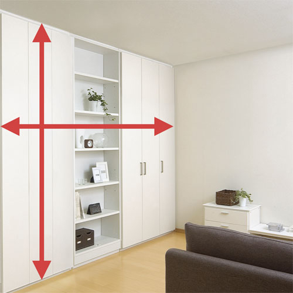
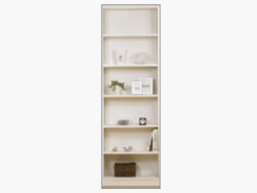
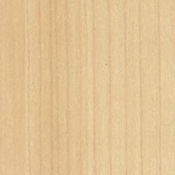

- TOP
- 可動間仕切収納について
MOVE PARTITIONce-fit（セフィット）
「可動間仕切収納」
ce-fit（セフィット）シリーズの「可動間仕切収納」は、ライフスタイルや暮らしの変化に合わせて空間を自在に仕切ることができる新発想の収納家具です。ハンドル操作ひとつで収納本体をご家族で簡単に動かせるから、レイアウト替えも楽しめます。お部屋の高さと幅にぴったり合うようミリ単位、制作するオーダーメイドファニチャーなので、後付けでありながらどんなお部屋でもぴったり設置できます。
こちらでは、アクシス株式会社の自信作である「可動間仕切収納」の特長と仕様、魅力などをお伝えします。
可動間仕切収納について
-
収納を動かす
ハンドルを回せばキャスターが床に接地。
天井まである収納棚も、
軽く押すだけで簡単に移動できます。
-
空間を仕切る
ミリ単位で高さ・幅を決めるオーダーメイドだから
お部屋にぴったり納まります。
空間を間仕切るのもオープンにするのも
自由自在。
-
天井に突っ張り・転倒防止
地震で大きく揺れても倒れない、安心感。
その秘密は、
天井に突っ張りしっかり固定する
その設置スタイルにあります。
-
ずっと使える
お子様の身長に合わせて
パーツを移動すれば
大人に成長しても
ずっと使っていただけます。

1．空間活用
アイデア次第で活用が広がる、暮らしを豊かに演出できる──
それが可動間仕切収納の魅力です。
家族の成長、ライフスタイルの変化に応じてお部屋の仕切り方を上手に変えれば、
「リフォームいらず」で生活空間をリフレッシュできます。
- STAGE1子どもたちの共有スペース
お子さまがまだ幼児や小学校低学年なら、
「可動間仕切収納」で
一つの部屋を勉強エリアと就寝エリアに仕切って
遊びも勉強も一緒。
きょうだいの絆が育まれますね。
- STAGE2それぞれの独立した部屋として
10代になり独立心が芽生えてきたら、
可動間仕切収納でお部屋を完全に独立した部屋として
仕切ってあげましょう。
自分と向き合える時間がお子さんをぐんと成長させるはず。
- STAGE3「私」に戻れるリラックス空間
上のお子さまが独立したら、
もう1人のお子さまのために
可動間仕切収納でレイアウト替え。
お部屋を緩く分割して書斎と就寝スペースに。
これで生活にもメリハリが生まれます。

- STAGE4夫婦のワンルーム空間
すべてのお子さまが独立したら、
可動間仕切収納を壁側に移動して
ご夫婦の趣味部屋にしてはいかがでしょうか。
ゆったりしたお部屋でお孫さんと触れ合うのも、
きっと楽しいはずです。
2．移動も固定も簡単
いつもは天井まで突っ張って、体あたりしてもビクともしない可動間仕切収納ですが、簡単操作で移動もラクラク。本体下部に格納されている昇降ハンドルをセットして回せば、本体が下がってキャスターが使えるようになります。
あとはもう軽く押すだけ。リフォーム工事も不要で、お部屋の模様替え、仕切り替えもスピーディーに行えます。この手軽さ、自由さがce-fit（セフィット）の魅力です。
3．幅と高さがぴったり
既製の収納家具では、「微妙に大きくてお部屋に収まらない」「不自然な隙間が生まれてしまう」
「高さやデザインがバラバラ」といったことがよくあります。
ce-fit(セフィット)の可動間仕切収納なら幅と高さをミリ単位でサイズオーダーできるので、どんなお部屋にもピッタリです。

スタンダードタイプ
幅と高さは、1ミリ単位のオーダーメイドです。
※表は左右にスクロールして確認することができます。
| プラン | 幅（mm） | 天井高さ（mm） | 奥行（mm） |
|---|---|---|---|
| 棚・パイプセット | 700～1900 | 1900～2580 | 560 |
| 棚セット | 700～960 | ||
| ダブルシェルフ | 700～960 | 508 |
4．天井にしっかり固定できる
既製の収納棚と決定的に違うのは、ミリ単位で高さや幅をオーダーできること。
しかも、天井部分に突っ張って固定するタイプだから地震で揺れたり、もたれかかっても動いたり倒れたりしません。
この安心感も、可動間仕切収納の魅力です。
天井の納まり
- 天井に突っ張って壁になる収納ユニット
【本体天面－天井（天井スペーサー）】
可動間仕切収納は固定時、天井にしっかり突っ張って壁のようにしっかりと納まります。なお、本製品では天井高さのバラツキ（不陸）を吸収するため、本体天面にスポンジ状の天井スペーサーを備えています。
【転倒しない収納家具で地震に備える】
収納棚全体がしっかり天井に突っ張るため、地震の揺れで倒れたり大きく移動したりする心配がありません。また、震度5弱以上の振動を感知して扉の開閉を自動的にロックする「センサー式耐震ロック」が標準装備されています。
スタンダードタイプ サイドの納まり
【壁との隙間を軟質材がしっかりふさぐ】
可動間仕切収納のサイドも隙間対策は万全。スポンジ状の軟質材と側板に止める受け材を組み合わせ、ぴったりとお部屋にフィットします。しかも、受け材に軟質材を押し込むだけなので施工もスピーディー。部屋を完全に二分する際にどうしても気になる「灯り漏れ」や「音漏れ」を大幅に低減できます。
【本体側面-壁面（サイドスペーサー）】
本体側面と壁面との隙間を埋め、巾木等を吸収するのに用いるのがサイドスペーサー。軟質材のため周囲の形状に沿って圧縮しますが、見付・見込（壁面からの出）寸法が大きい場合、ぴったりと納まらない場合があります。その場合は、はさみなどで造作材の形状に合わせカットして調整します。なお、LDKタイプにはサイドスペーサーを取り付けることができません。壁に寄せた際、巾木や廻縁の分、隙間を設けて設置します。
5．モノに合わせて収納パーツを変える
可動間仕切収納は、内部もフレキシブルに変更できるのが特長。
家族の人数や収納する物の種類、数量などに合わせて棚板やハンガーパイプを自在に組み合わせることができます。
ドライバー1本で何度でも
-
棚板やハンガーパイプの高さをドライバー1本で簡単に変更できる手軽さも魅力。パーツの追加も自由だから、収納スタイルに幅が出ます。なお、取付穴はパーツの移動・変更を何度繰り返しても変形しないよう工夫されています。ずっと使っていただきたいというアクシスの想いです。
「もの」や「ひと」に合わせて
-
家族の人数や収納する物の種類、数量などに合わせて、棚板やハンガーパイプを自在に組み合わせることができます。お子さまの身長に応じてパーツの位置を移動できるので、子育て中のご家庭にはうれしいでしょう。
お子さまの成長にも一役
-
可動間仕切収納を使い始めてから、お子さまが「自分で洋服を選ぶようになった」「片付けが好きになった」といった声をお客様からいただいています。
バリエーション
スタンダードタイプ、アッパーBOXタイプの2タイプ。お部屋の広さや間取り、住まい方などに合わせてお選びいただけます。
1．本体の種類
-
スタンダードタイプ
-
アッパーBOXタイプ

天井に段差がない空間には「スタンダードタイプ」を、マンションや鉄骨造の住宅で梁が出ていて天井に段差がある場合は、収納付「アッパーBOXタイプ」をおすすめします。なお、梁が小さく「アッパーBOXタイプ」が適用できない場合は、収納部のない「フィラーBOXタイプ」をご利用いただけます。
2.収納セットの種類
-
棚・パイプセット
-
棚セット
-
ダブルシェルフ

内部が棚板とハンガーパイプの各1段で構成されている「棚・パイプセット」、棚板が4段構成になっている「棚セット」からお選びいただけます。さらに、扉がなく裏表から使えるオープンタイプの棚収納「ダブルシェルフ」もご用意しています。
3.カラー
扉&FIXパネルのカラーをお選びいただけます。お部屋に合わせ、明るい印象やシックな印象などを自在に演出できます。
扉&FIXパネル
- クリアホワイト
- ホワイトエルム
- 
- コンフォートクリア
- コンフォートミディアム
- コンフォートダーク
本体カラーオプション
標準仕様では、扉と背面のパネルカラーを5色から選べます。なお、本体内部と側板外面はクリアホワイトのみの設定ですが、オプションで収納ユニットの外見を扉と同色にコーディネートできます。その場合、価格は標準仕様の5％増しになります。
4.標準仕様
シンプルなデザインの高性能＆高耐久パーツ
- 扉軽くて丈夫なフラッシュパネル。
シンプルなデザインに仕上げました。
- スライドヒンジBlum社製の高性能スライドヒンジ。
ワンタッチタイプで扉の着脱も簡単。
- 取手使いやすい長型の標準取手と
シャープな角型のセレクトハンドルをご用意。
- ジャッキアップハンドル本体を動かす時に使います。
内部に収納し、紛失する心配がありません。
- センサー式耐震ロック震度5弱以上の揺れを感知している間だけ、
扉の開閉をロックします。
- 棚坂とハンガーパイプ棚・パイプセットは扉を開くごとに
棚板1枚とハンガーパイプ1本を標準装備。
5.カスタムパーツ
アクシスでは、棚板やハンガーパイプ、引き出し、小物ハンガーバーなど可動間仕切収納の機能や使い勝手を高めるカスタムパーツを各種ご用意しています。なお、震度5弱以上の揺れを感知して扉の開閉を自動的にロックする「センサー式耐震ロック」は、すべての可動間仕切収納に標準装備されています。
使いやすさがアップする収納パーツをラインナップ
- 棚板耐荷重
（20kg/枚）
- ハンガーパイプ耐荷重
（45kg/90cm）
- 引出し ※1耐荷重
（10kg/段）
- 小物ハンガー耐荷重
（2kg/セット）
※1 引出し 写真は棚板1段+引出し2段。最上段の上に棚板が1段必要です。
スタンダードタイプ 取手
ハンドルは、3種類の中からお選びいただけます
-
標準品
丸型取手（P=300）
-
セレクトハンドル
（角型P＝250）
-
セレクトハンドル
（角型P＝150）
どなたにもお使い頂きやすくなっております。
※お選びいただく取手により価格が異なります。
6.オプション
「パーツを追加したい」「不要なパーツを除外したい」といったお客様のご要望にも、可動間仕切収納なら柔軟にお応えできます。
※表は左右にスクロールして確認することができます。
| マイナスオプションA | マイナスオプションB | 袖壁パネル追加 |
|---|---|---|
| 「棚・パイプセット」「棚セット」を“扉なし”でご注文いただけます。見せる収納を楽しまれるご家庭にはぴったり。扉がないため、お手入れもしやすくなります。 | 「棚・パイプセット」「棚セット」で本体1台に片側分ずつ付いている壁と本体との隙間をふさぐ“サイドスペーサーなし”でご注文いただけます。 | ドア間・窓間が狭い場合でも、壁工事なしで間仕切りできる袖壁パネルを追加するオプションです。 ※本体は「オプションB」でご注文ください。 |
-
ハンガー
パイプなしハンガーパイプなしの
マイナスオプションです通常、棚・パイプセットに標準装備されているハンガーパイプなしでお届けします。
-
本体連結
穴追加本体連結穴追加の
オプション加工です袖壁納まりの時、奥行き方向均等割りに配置できるよう側板中央に連結穴を追加してお届けします。
袖壁パネル
可動間仕切収納 「スタンダードタイプ」と組み合わせていただけるオプションです。
1．ドア間や窓間の壁幅寸法が狭い部屋でも、壁工事なしで間仕切り可能
プランの関係で通常は間仕切り壁工事が必要となるような既存住宅でも、壁工事なしで1室を2室に間仕切ることができます。
2．袖壁パネルが簡単に撤去できるため、2室を1室に戻す場合に便利
リフォーム工事で袖壁を設けた場合は撤去時にも工事が必要ですが、袖壁パネルならご家族で手軽に撤去できます。
※ 袖壁パネルはドアとドアの間の壁にパネル受けをビス固定して使用するため、ご家族で取り外しが可能です。ただし、壁にビス穴の跡が残る点はあらかじめご了承ください。
3．「可動間仕切収納」も「袖壁パネル」もミリ単位オーダーで空間を有効活用
パネル幅寸法は必要最小限にできるため、可動間仕切収納本体のサイズを最大にすれば、収納部分を有効活用できます。
製品構成
-
- 袖壁パネルはパネル受け（壁側）を壁にビス固定する商品です。 壁設置用下地が入った位置で間仕切りしてください。 オープンなワンルームに戻す際、ご家族だけで取り外しが可能ですが、 壁にビス穴が残ります。
- 袖壁パネル単品で壁として自立することはできません。必ず可動間仕切収納本体と組み合わせてお使いください。
- 建築幅木・廻縁がある場合は、パネル受け（壁側）の現場カットが必要です。
- 明かり漏れ・音漏れ、パネル強度は建具同等となりますのでご注意ください。
- 可動間仕切収納の奥行方向に対して、中央に固定します。 固定位置をずらすことはできません。
- 必ず可動間士切収納本体（オプションB）と組み合わせてお使いください。
価格について
※表は左右にスクロールして確認することができます。
| スタンダードタイプ 棚・パイプセット | ||||||
|---|---|---|---|---|---|---|
| 画像 | ||||||
| 幅 | 700～800mm | 801～960mm | 961～1200mm | 1201～1400mm | 1401～1600mm | 1601～1900mm |
| 奥行 | 560mm | 560mm | 560mm | |||
| 高さ | 1900～2580mm | 1900～2580mm | 1900～2580mm | |||
| 品番 | MP1-07 | MP1-09 | MP1-10 | MP1-12 | MP1-14 | MP1-16 |
| 価格 | 156,100円 | 160,000円 | 202,800円 | 206,600円 | 237,100円 | 241,800円 |
※表は左右にスクロールして確認することができます。
| 棚セット | ダブルシェルフ | 袖壁パネル | ||||
|---|---|---|---|---|---|---|
| 画像 | ||||||
| 幅 | 700～800mm | 801～960mm | 700～800mm | 801～960mm | 200～400mm | 401～900mm |
| 奥行 | 560mm | 508mm | ── | |||
| 高さ | 1900～2580mm | 1900～2580mm | 1900～2535mm | |||
| 品番 | MP1-07S | MP1-09S | MP1-07W | MP1-09W | MP1-E04 | MP1-E09 |
| 価格 | 163,800円 | 168,500円 | 130,000円 | 30,300円 | 35,000円 | |
※表示価格は希望小売価格です。消費税および施工費は含まれておりません。
導入事例（価格）
-
12畳のお部屋
間口2600mmを間仕切ると……MP1-12＋MP1-12 セット価格：413,200円
-
扉と扉の間隔が狭い 16畳のお部屋
間口3510mmを間仕切ると……MP1-12＋MP1-12＋袖壁パネル セット価格：439,900円
ce-fit（セフィット）の可動間仕切収納について商品カタログ各種はこちらからダウンロードいただけます。